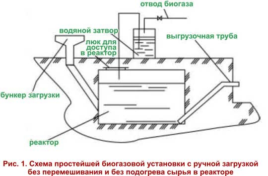
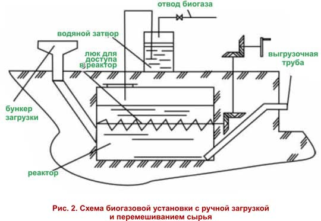
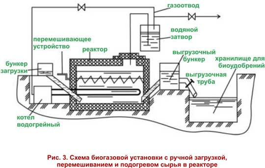
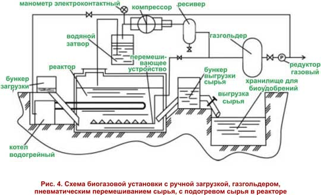
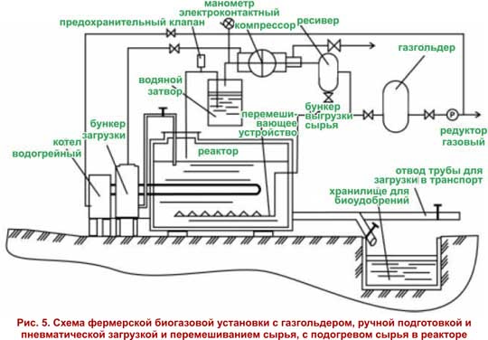
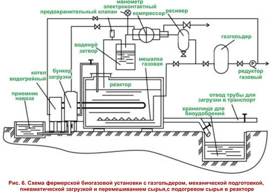

Простейшие типы биотопливных установок

|
Биогазовая установка с ручной загрузкой без перемешивания и без подогрева сырья в реакторе
 Простейшая биогазовая установка предназначена для небольших фермерских хозяйств. Объем реактора установки от 1 до 10 м3 рассчитан на переработку 50 - 200 кг навоза в сутки. Установка содержит минимум составных частей для обеспечения процесса переработки навоза и получения биоудобрений и биогаза: реактор, бункер загрузки свежего сырья, устройство отбора и использования биогаза, устройство выгрузки сброженного сырья.
Биогазовая установка может быть использована в южных районах без
подогрева и перемешивания и предназначена для работы в психофильном
температурном режиме от 5°С до 20°С. Вырабатываемый биогаз сразу
направляется на использование в бытовых приборах.
Простейшую биогазовую установку может построить своими силами любой фермер.
При самостоятельном изготовлении простейшей биогазовой установки
рекомендуется придерживаться следующего порядка: после определения
ежесуточного объема навоза, накапливаемого в хозяйстве для переработки в
биогазовой установке, и выбора нужного объема реактора нужно выбрать
месторасположение реактора и заготовить материалы для реактора
биогазовой установки. Затем осуществляются монтаж загрузочной и
выгрузочной труб и подготовка котлована для биогазовой установки. После
установки реактора в котлован производится монтаж загрузочного бункера и
газоотвода, после чего устанавливается крышка люка, который будет
использоваться для технического обслуживания и ремонта реактора. Затем
производятся проверка реактора на герметичность, окраска и теплоизоляция
установки. Установка готова к запуску в эксплуатацию!  Строительство биогазовой установки с ручной загрузкой и перемешиванием сырья также не требует больших финансовых затрат.Она предназначена для небольших фермерских хозяйств. Объем реактора установки от 1 до 10 м3 рассчитан на переработку 50 - 200 кг навоза в сутки. Для повышения эффективности работы биогазовой установки смонтировано устройство ручного перемешивания сырья. Биогазовая установка с ручной загрузкой, перемешиванием и подогревом сырья в реакторе
 Для более интенсивного и стабильного процесса сбраживания установлена система подогрева реактора.Установка может работать в мезофильном и термофильном режимах. Реактор биогазовой установки подогревается при помощи водогрейного котла, работающего на производимом биогазе. Остальной биогаз используется напрямую в бытовых приборах. Переработанное сырье хранится в специальной емкости до времени внесения в почву. Биогазовая установка с ручной загрузкой, газгольдером, пневматическим перемешиванием сырья, с подогревом сырья в реакторе  Простая установка с ручной загрузкой сырья в реактор снабжена автоматическим откачивающим устройством вырабатываемого биогаза и газгольдером для его хранения.Перемешивание сырья в реакторе производится пневматическим способом с использованием биогаза. Такая биогазовая установка может работать во всех температурных режимах сбраживания. Биогазовая установка с газгольдером, ручной подготовкой и пневматической загрузкой и перемешиванием сырья, с подогревом сырья в реакторе  Установка предназначена для малых и средних фермерскиххозяйствс возможностью переработки от 0,3 до 1,5 тонн сырья в сутки. Объемы реакторов - от 5 до 25 м3.Загрузка и перемешиваниесырья механизированы и производятся с помощью пневматической системы. Подогрев сырья вреакторе биогазовой установки производится с помощью теплообменника с водонагревательным котлом, работающим на биогазе. Трубопровод выгрузки сырья имеет разветвление для сбора биоудобрений в хранилище и для загрузки в транспортные средства для вывоза на поле. Устройство этой биогазовой установки предусматривает ручную подготовку и пневматическую загрузку сырья в реактор, часть вырабатываемого биогаза используется для подогрева сырья в реакторе. Перемешивание производится биогазом. Отбор биогаза производится автоматически. Биогаз хранится в газгольдере. Установка может работать в любом температурном режиме сбраживания сырья. Биогазовая установка с газгольдером, механической подготовкой, пневматической загрузкой и перемешиванием сырья, с подогревом сырья вреакторе  Отличительной особенностью этой биогазовой установки предназначенной для средних и крупных крестьянских хозяйств, является наличие специальной емкости для подготовки сырья, откуда оно подается при помощи компрессора в бункер загрузки, а затем с помощью сжатого биогаза - в реактор установки. Для работы системы обогрева используется часть вырабатываемого биогаза. Установка снабжена автоматическим отбором биогаза и газгольдером для его хранения. Наличие системы обогрева позволяет эксплуатировать биогазовую установку во всех режимах сбраживания. |